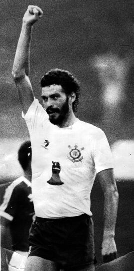

O Doutor que Fez História no Futebol e na Política Brasileira
Sócrates Brasileiro Sampaio de Souza Vieira de Oliveira, conhecido simplesmente como Sócrates, foi um dos maiores ícones do futebol brasileiro. Nascido em 19 de fevereiro de 1954, em Belém do Pará, e formado em medicina, Sócrates conquistou admiração tanto dentro quanto fora dos gramados. Com sua habilidade ímpar, inteligência afiada e senso de justiça, ele se destacou como jogador e como ativista político.

No futebol, Sócrates brilhou principalmente com as camisas do Botafogo de Ribeirão Preto, Corinthians e da seleção brasileira. No Corinthians, o meia se tornou símbolo de uma era vitoriosa e inovadora, ao liderar a "Democracia Corinthiana", um movimento dentro do clube que visava dar voz a todos os envolvidos, desde jogadores até funcionários, nas decisões administrativas. Essa foi uma das maiores iniciativas de autogestão no futebol, sendo um marco histórico no esporte brasileiro.
Em campo, Sócrates era um craque de técnica refinada. Seu toque de calcanhar virou marca registrada e sua visão de jogo permitia passes e jogadas geniais. Como capitão da seleção brasileira na Copa do Mundo de 1982, ele liderou um dos times mais memoráveis da história do futebol, ao lado de Zico, Falcão e Júnior. Embora o Brasil não tenha vencido o torneio, o futebol arte daquela equipe encantou o mundo.
Fora das quatro linhas, o "Doutor" foi um ativista político durante os anos finais da ditadura militar no Brasil. Sócrates, ao lado de outros jogadores e intelectuais, engajou-se no movimento "Diretas Já", que lutava pelo restabelecimento das eleições diretas no país. Ele usou sua plataforma no futebol para promover causas sociais e democráticas, inspirando muitos a seguirem esse caminho de conscientização.
Sócrates faleceu em 2011, mas seu legado no esporte e na política continua a inspirar gerações. Ele não foi apenas um jogador excepcional, mas também um cidadão consciente, que usou o futebol como ferramenta de transformação social.
Linha do Tempo: A Vida de Sócrates
19 de fevereiro de 1954: Nasce Sócrates em Belém do Pará, Brasil.
1974: Inicia sua carreira profissional no Botafogo de Ribeirão Preto.
1978: Transferência para o Corinthians, onde se tornaria um dos maiores ídolos.
1982: Capitão da seleção brasileira na Copa do Mundo da Espanha, liderando o time conhecido pelo "futebol arte".
1983: Consolida o movimento "Democracia Corinthiana", revolucionando a gestão do futebol no clube.
1984: Participa ativamente do movimento "Diretas Já", que clamava pelo retorno das eleições diretas no Brasil.
1984: Transfere-se para a Fiorentina, da Itália, buscando desafios internacionais.
1986: Joga sua última Copa do Mundo pela seleção brasileira no México.
1989: Encerra sua carreira como jogador profissional.
2004: Participa de eventos comemorativos e jogos de exibição, sendo celebrado como uma lenda do futebol.
4 de dezembro de 2011: Falece em São Paulo, vítima de complicações intestinais.
Essa linha do tempo resume momentos marcantes da vida de Sócrates, tanto no esporte quanto em sua atuação política.